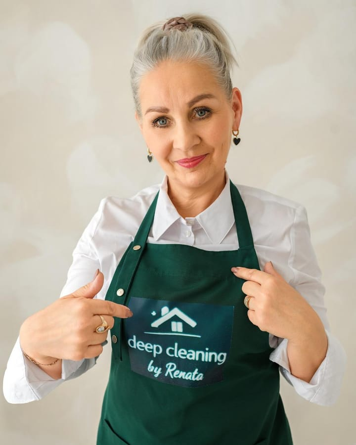

Profesjonalne sprzątanie gruntowne w południowo-zachodnim Londynie
Sprzątanie po zakończeniu najmu, po remoncie, jednorazowe sprzątanie gruntowne i regularne sprzątanie w Wimbledonie, Putney, Richmond, Barnes i okolicach.
Wyprowadzasz się, kończysz remont albo Twój dom potrzebuje gruntownego odświeżenia? Renata planuje każde sprzątanie z uwzględnieniem stanu nieruchomości i ustala z Tobą zakres oraz cenę, zanim rozpocznie pracę. Dostępne jest też sprzątanie co tydzień lub co dwa tygodnie.
Każda wycena zależy od wielkości nieruchomości, jej stanu i zakresu prac.

- Prawie 15 lat doświadczeniaFirma prowadzona przez właścicielkę: od zapytania do końca sprzątania kontaktujesz się bezpośrednio z Renatą
- Weryfikacja DBSSprawdzona przez brytyjską służbę Disclosure and Barring Service
- Własne środki i sprzętOdkurzacz, mop, ściereczki i środki czystości na każdym zleceniu
- Jasna wycena przed rozpoczęciemZakres i cena ustalone przed rezerwacją
Sprzątanie po najmie, po remoncie, gruntowne i regularne
Jednorazowe sprzątanie i regularne wizyty – każda usługa wyceniana indywidualnie. Nie wiesz, co wybrać? Opisz, czego potrzebujesz, a Renata doradzi.
-
Sprzątanie po zakończeniu najmu
Nieruchomość gotowa do zdania
Dla najemców, którzy się wyprowadzają, oraz dla właścicieli i agencji między najmami. Dokładna lista prac jest ustalana w wycenie; jeśli masz inwentarz lub protokół zdawczo-odbiorczy, wspomnij o nim.
- Blaty i szafki kuchenne, w środku i na zewnątrz (jeśli są puste)
- Łazienki umyte i odkamienione
- Listwy przypodłogowe, drzwi, włączniki i dostępne okna od wewnątrz
- Podłogi odkurzone i umyte
-
Sprzątanie po remoncie
Usunięcie pyłu pozostałego po remoncie
Dla właścicieli domów po rozbudowie, remoncie lub montażu nowej kuchni oraz dla firm budowlanych przekazujących nieruchomość. Napisz, jakie prace zostały wykonane. Usuwanie farby lub kleju jest wyceniane osobno.
- Usunięcie drobnego pyłu budowlanego z dostępnych powierzchni, armatury i listew
- Sprzątanie kuchni i łazienek
- Podłogi odkurzone i umyte
- Szyby od wewnątrz, jeśli są bezpiecznie dostępne
-
Jednorazowe sprzątanie gruntowne
Gruntowne odświeżenie domu, któremu nie wystarczy zwykłe sprzątanie
Przed sprzedażą, po przeprowadzce lub gdy dom po prostu tego potrzebuje. Dopasowane do nieruchomości, z listą prac ustaloną w wycenie.
- Dokładne sprzątanie kuchni i łazienki
- Dostępne powierzchnie, listwy przypodłogowe, drzwi i włączniki
- Okna od wewnątrz i podłogi
-
Regularne sprzątanie
Porządek w domu na co dzień
Wizyty co tydzień lub co dwa tygodnie, z planem sprzątania dopasowanym do Twojego domu.
- Wizyty co tydzień lub co dwa tygodnie
- Plan sprzątania ustalony z Tobą
- Środki czystości i sprzęt na każdej wizycie
Z czym radzi sobie gruntowne sprzątanie
-
Wkrótce
Tłuszcz w kuchniBlaty, ściana nad blatem i fronty szafek
-
Wkrótce
KamieńKrany, kabiny prysznicowe, płytki i toalety – odkamienione
-
Wkrótce
Drobny pył po remoncieWarstwa, która po pracach budowlanych osiada na każdej powierzchni
-
Wkrótce
Listwy i krawędzieListwy przypodłogowe i zakamarki pomijane przy szybkim sprzątaniu
Czyszczenie piekarnika w środku, czyszczenie lodówki/zamrażarki, pranie dywanów i wywóz śmieci to usługi dodatkowe, zależne od dostępności i wyceniane osobno. Nie wykonujemy: mycia okien z zewnątrz, prac z materiałami niebezpiecznymi, wywozu ciężkich odpadów ani prac na wysokości.
Prawdziwe sprzątanie. Prawdziwe efekty.
Zdjęcia przed i po z prawdziwych zleceń Renaty, zrobione z tego samego miejsca. Przeciągnij suwak lub użyj strzałek, aby porównać.
-
WkrótceWkrótce
Sprzątanie po najmie -
WkrótceWkrótce
Sprzątanie po remoncie -
WkrótceWkrótce
Sprzątanie gruntowne
Dlaczego Renata?
-
Dokładnie, a nie w pośpiechu
Każde sprzątanie jest planowane z uwzględnieniem stanu nieruchomości i ustalonego zakresu, a nie według ogólnej listy odhaczanej na czas.
-
Wiesz, kto sprząta
Osobista obsługa prowadzona przez właścicielkę – od pierwszej wiadomości do zakończonego sprzątania.
-
Wszystko jasne przed rozpoczęciem
Zakres i wycena są ustalane przed rezerwacją, więc dokładnie wiesz, co jest wliczone.
Właścicielka, Deep Cleaning by Renata
Poznaj Renatę
Cześć, jestem Renata, właścicielka Deep Cleaning by Renata. Od prawie 15 lat zajmuję się sprzątaniem domów w Londynie. Zawsze pracowałam samodzielnie, zdobywając doświadczenie i budując swoją reputację dzięki ciężkiej pracy oraz poleceniom zadowolonych klientów, którzy przekazywali mój kontakt swoim rodzinom i znajomym.
Przez te lata sprzątanie stało się dla mnie czymś więcej niż tylko pracą — czymś, co naprawdę lubię robić. Wkładam serce w swoją pracę, a największą radość sprawia mi zadowolenie klientów z jej efektów.
Kontaktując się, rozmawiasz z osobą, która planuje sprzątanie, ustala z Tobą zakres i cenę oraz odpowiada za efekt.
Jak to działa
-
Opowiedz Renacie o nieruchomości
Rodzaj sprzątania, wielkość i stan nieruchomości, kod pocztowy oraz preferowany termin.
-
Otrzymaj wycenę
Zakres i cena są potwierdzane, zanim cokolwiek zostanie zarezerwowane.
-
Zarezerwuj sprzątanie
Termin zostaje potwierdzony, a sprzątanie wykonane zgodnie z ustaleniami.
Wycena dopasowana do Twojej nieruchomości, a nie gotowy pakiet
Podaj wielkość i stan nieruchomości oraz rodzaj sprzątania. Renata potwierdzi, co obejmuje usługa, i poda jasną cenę przed rezerwacją.
Opinie
Profil firmy Renaty w Google jest nowy, więc nie ma tam jeszcze opinii. Jeśli Renata u Ciebie sprzątała, kilka słów o Twoich wrażeniach pomoże innym ją znaleźć.
Naturalne składniki, dokładne efekty
Każde sprzątanie odbywa się przy użyciu środków na bazie składników pochodzenia naturalnego – na każdym zleceniu i w każdym pomieszczeniu. Trudne zabrudzenia wymagają więcej czasu i uwagi, a nie mocniejszej chemii.
Przed sprzątaniem daj znać Renacie o alergiach, nadwrażliwościach lub zwierzętach w domu.
- Czego używamy
- Renata przynosi własne środki czystości i sprzęt, w tym odkurzacz, mop i ściereczki. Używa środków zawierających składniki pochodzenia naturalnego, starannie dobranych z myślą o domach, w których mieszkają ludzie i zwierzęta, i zawsze stosowanych zgodnie z instrukcją.
- Przy trudnych zabrudzeniach
- Zapieczony tłuszcz, kamień i osady są czyszczone tymi samymi środkami na bazie naturalnych składników – z dodatkowym czasem i starannością, których wymagają.
Od Renaty
Trochę więcej o mnie
Poza pracą jestem szczęśliwą mamą i babcią. Jestem ciepłą, uśmiechniętą i pozytywną osobą. Uwielbiam spędzać czas z rodziną, podróżować, jeździć na rowerze, spacerować na łonie natury i odkrywać nowe miejsca.
Od pięciu lat bardzo interesuję się rozwojem osobistym i zdrowiem psychicznym. Jednym z moich marzeń jest wspieranie kobiet, które straciły wiarę w siebie lub zapomniały o własnych potrzebach, i pomaganie im w odnalezieniu na nowo swojej siły i radości życia.
Wierzę, że nigdy nie jest za późno, żeby zacząć od nowa.
Sprzątanie w Wimbledonie i południowo-zachodnim Londynie
Sprzątanie po najmie, po remoncie, gruntowne i regularne w Wimbledonie i okolicach, m.in.:
- Wimbledon
- Putney
- Richmond
- Barnes
Obsługujemy też miejsca położone w pobliżu. Nie wiesz, czy obsługujemy Twój kod pocztowy? Podaj go w zapytaniu, a potwierdzimy. Zapytaj o swój kod pocztowy
Pytania przed rezerwacją
Nie ma tu odpowiedzi na Twoje pytanie? Napisz do Renaty na WhatsAppie, zadzwoń pod numer 07456 950999 lub wyślij e-mail na adres deepcleaning.renata@gmail.com.
Co obejmuje sprzątanie?
Każde sprzątanie jest wyceniane indywidualnie, w zależności od wielkości i stanu nieruchomości oraz zakresu prac, a lista prac i cena są potwierdzane przed rezerwacją. Orientacyjnie sprzątanie gruntowne obejmuje dokładne sprzątanie kuchni i łazienek, dostępnych powierzchni, listew przypodłogowych, drzwi, włączników, okien od wewnątrz i podłóg. Czyszczenie piekarnika w środku, lodówki/zamrażarki, dywanów oraz wywóz śmieci to usługi dodatkowe, wyceniane osobno.
Kto zapewnia środki czystości i sprzęt?
Renata przynosi własne środki czystości i sprzęt, w tym odkurzacz, mop, ściereczki i inne potrzebne akcesoria. Używa środków zawierających składniki pochodzenia naturalnego, dobranych z myślą o domach, w których mieszkają ludzie i zwierzęta, i zawsze stosowanych zgodnie z instrukcją. Przed sprzątaniem daj znać o alergiach, nadwrażliwościach lub zwierzętach.
Czy można zamówić regularne sprzątanie?
Tak. Dostępne jest sprzątanie co tydzień lub co dwa tygodnie, z planem dopasowanym do Twojego domu.
Ile trwa sprzątanie?
To zależy od wielkości i stanu nieruchomości oraz rodzaju sprzątania, dlatego szacowany czas podamy razem z wyceną.
Czy sprzątanie gwarantuje zwrot kaucji za najem?
Żadna firma sprzątająca nie może tego uczciwie obiecać. O zwrocie kaucji decyduje właściciel lub agencja, biorąc pod uwagę nie tylko czystość, ale też np. uszkodzenia i zużycie. Możemy natomiast posprzątać zgodnie z ustaloną z Tobą listą prac – dlatego jeśli masz inwentarz lub protokół zdawczo-odbiorczy, prześlij go.
Czy mogę zamówić sprzątanie po remoncie?
Tak. Najlepiej po zakończeniu prac budowlanych, gdy ekipy opuszczą już budynek, żeby pył nie osiadał ponownie. Napisz, jakie prace zostały wykonane, i jeśli możesz, wyślij kilka zdjęć. Usuwanie farby lub kleju jest wyceniane osobno, a wywozu ciężkich odpadów i gruzu nie oferujemy.
Czego nie obejmuje usługa?
Nie oferujemy mycia okien z zewnątrz, prac z materiałami niebezpiecznymi, wywozu ciężkich odpadów ani prac na wysokości.
Czy muszę być w domu podczas sprzątania?
Twoja obecność przez cały czas sprzątania nie jest konieczna, o ile dostęp do nieruchomości i przekazanie kluczy zostaną ustalone wcześniej.
Jakie okolice obsługujecie?
Wimbledon i okolice, w tym Putney, Richmond i Barnes, a także miejsca położone w ich pobliżu. Obecnie nie dojeżdżamy dalej. Nie masz pewności? Podaj kod pocztowy w zapytaniu, a potwierdzimy.
Jak obliczana jest wycena?
Każda wycena zależy od wielkości i stanu nieruchomości, rodzaju sprzątania oraz wybranych usług dodatkowych. Nie ma gotowych pakietów. Zdjęcia pomagają: wyślij kilka na WhatsAppie lub przez formularz, a wycena będzie dokładniejsza.
Jak przygotować nieruchomość?
Zapewnij bezpieczny dostęp do nieruchomości, działający prąd i ciepłą wodę oraz zabierz rzeczy osobiste z miejsc, które mają być sprzątane. Przy sprzątaniu po zakończeniu najmu najlepiej, aby nieruchomość była pusta.
Z jakim wyprzedzeniem rezerwować?
Skontaktuj się jak najwcześniej, aby sprawdzić dostępność terminów.
Jak zarezerwować i zapłacić?
Wyślij formularz lub wiadomość na WhatsAppie. Gdy zaakceptujesz zakres i cenę, ustalimy termin. Nowi klienci przy rezerwacji wpłacają zaliczkę w wysokości 10%, a resztę po wykonaniu usługi; stali klienci nie wpłacają zaliczki. Płatność przelewem lub gotówką.
Napisz Renacie, co trzeba posprzątać
Podaj kilka informacji o nieruchomości. Renata odpowie, potwierdzając zakres i jasną cenę. Nic nie zostanie zarezerwowane bez Twojej zgody.
Chcesz szybciej dostać wycenę? Wyślij kilka zdjęć nieruchomości na WhatsAppie.
Napisz na WhatsAppie- Telefon
- 07456 950999
- Obsługiwany obszar
- Wimbledon, Putney, Richmond, Barnes i okolice
- Godziny pracy
- Poniedziałek–piątek: 08:00–17:30Sobota: 09:00–15:30Niedziela: nieczynne